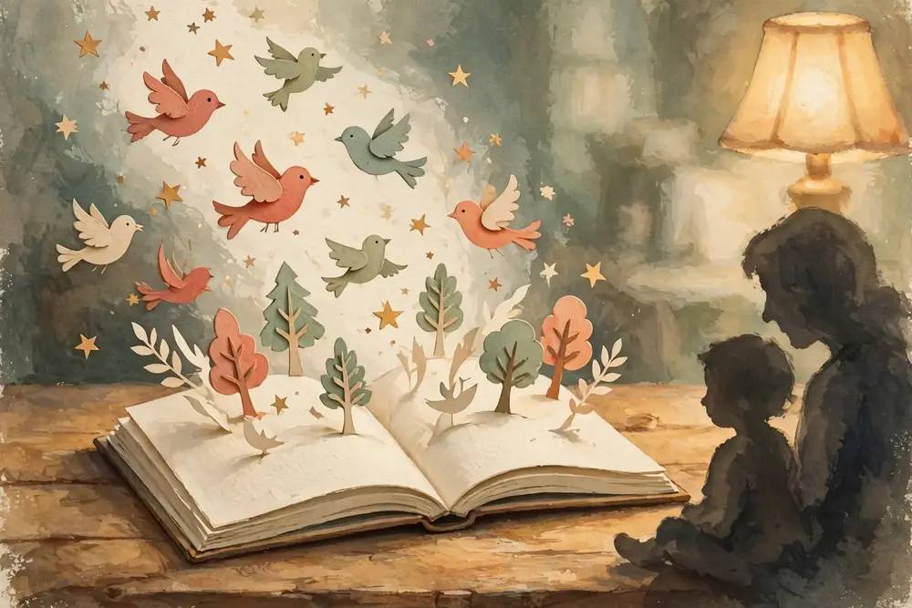
繪本導讀 · 樂書香
親子館繪本導讀、各區圖書館「幸福家庭樂書香」、幼兒園「玩出新默契」——用故事把親子拉近，讓閱讀成為家庭的共同語言。

邱錦秀從學校志工起步，一做就是幾十年。到 2019 年，她的志工生涯已滿 22 年，累積服務時數 8,602.5 小時，是當年台南市金質獎得主中時數最多的一位，也是全國金牌獎最年輕的得主。
她具有教育部家庭教育專業人員認證，服務的腳步遍及學校、社區、醫院與司法機關：個別化親職教育專案走進高危機家庭，諮詢專線接住求助的聲音，親子館與圖書館的繪本導讀陪孩子長大，少年觀護所的教誨課一講就是 13 年。
2019 年那一年，她一年服務超過 500 小時，還參加了 400 小時的研習。對她來說，學習與服務是同一件事：教別人，也教自己。
臺南市家庭教育中心，帶領志工團隊推動家庭教育
台南市政府警察局第四分局，凝聚警民志工向心力
教育部家庭教育專業人員認證，教學相長近三十載
以有溫度的手作與正向教養，陪伴家庭找回幸福力量

「當志工，雖服務別人，但最大受益者是自己。
我的志工之路將持續走下去。」
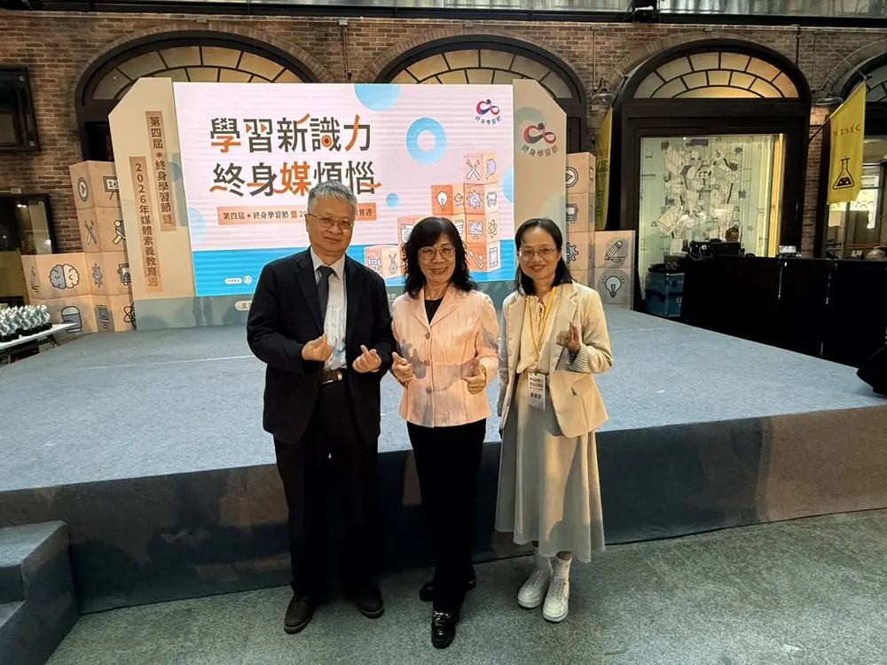
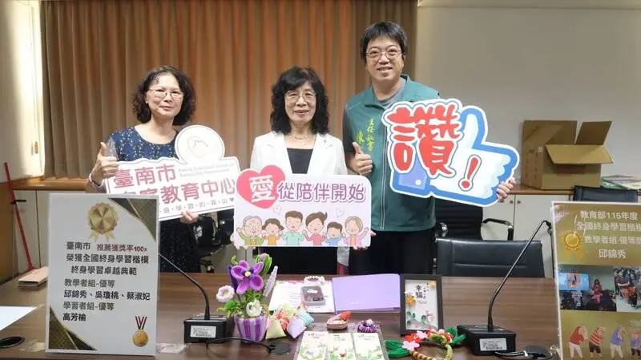
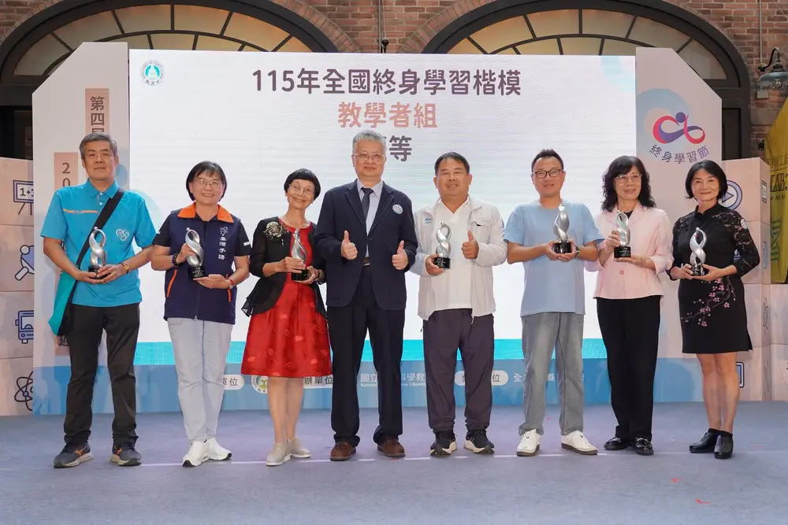
從一通電話、一本繪本，到一堂走進觀護所的課——她的服務沒有固定教室，家庭在哪裡，教室就在哪裡。

親子館繪本導讀、各區圖書館「幸福家庭樂書香」、幼兒園「玩出新默契」——用故事把親子拉近，讓閱讀成為家庭的共同語言。
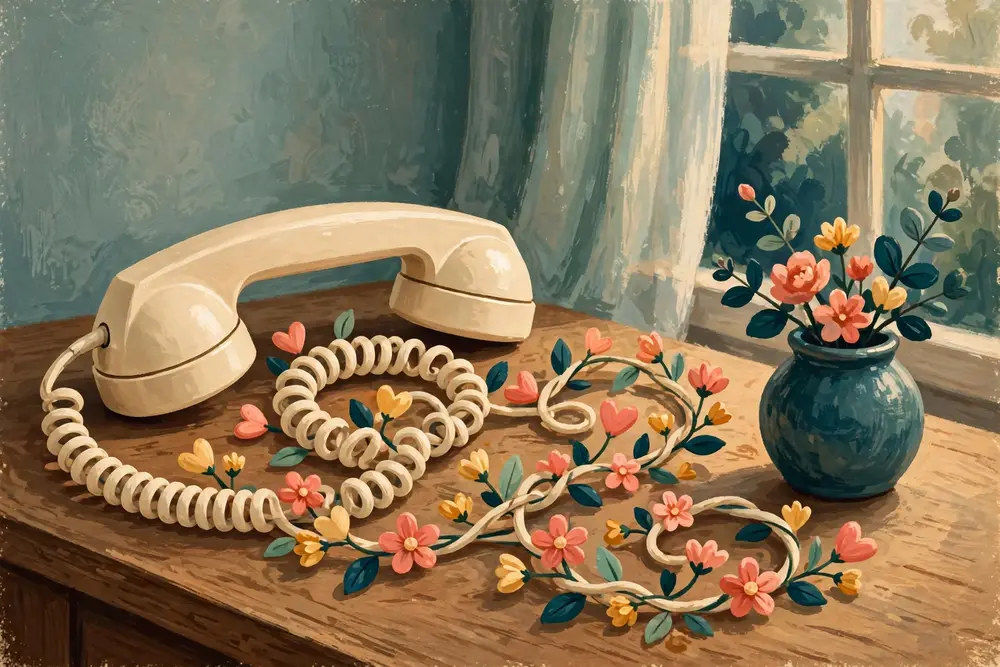
接聽 412-8185 家庭教育諮詢專線，在電話那頭接住每一個求助的聲音。
「每次出勤都是學習，從校園到社區、醫院，一場場活動累積出深厚的觀察與感動。」
—— 邱錦秀，2025 年獲獎後受訪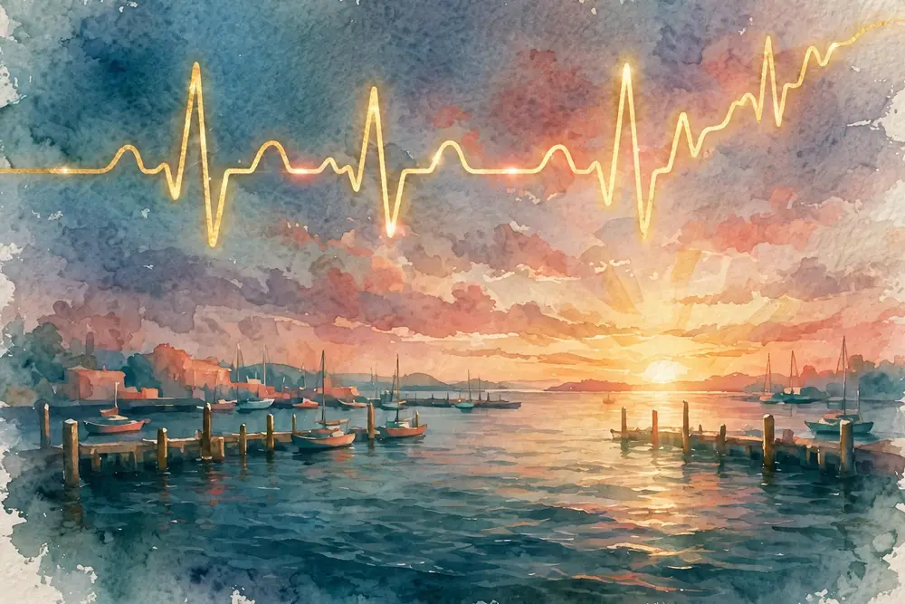
連續 13 年擔任少年觀護所教誨講師，並參與「個別化親職教育專案」協助高危機家庭，陪伴迷惘的青少年與家庭重獲新生。
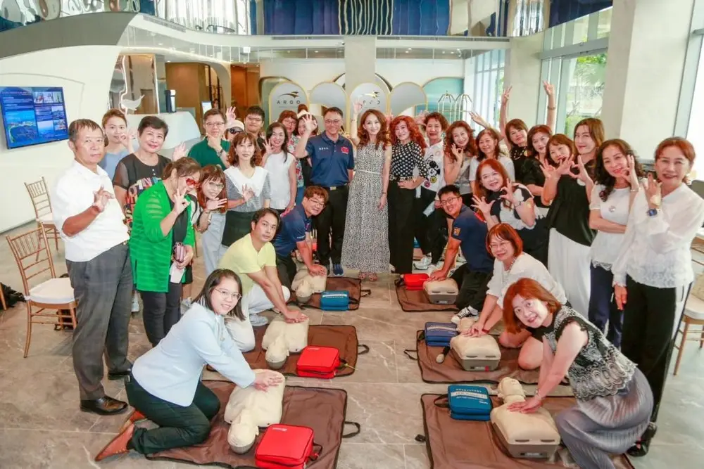
2025 年擔任三三讀書會活動總控，邀請消防局第六大隊教授 CPR 與 AED。她說：「我們就像在合奏救命練習曲，撐住緊急危難的當下，就能看到生命新的希望。」
點照片上的紅點，看這一刻的四個細節。台南市推薦 4 人全數獲獎，獲獎率 100%。
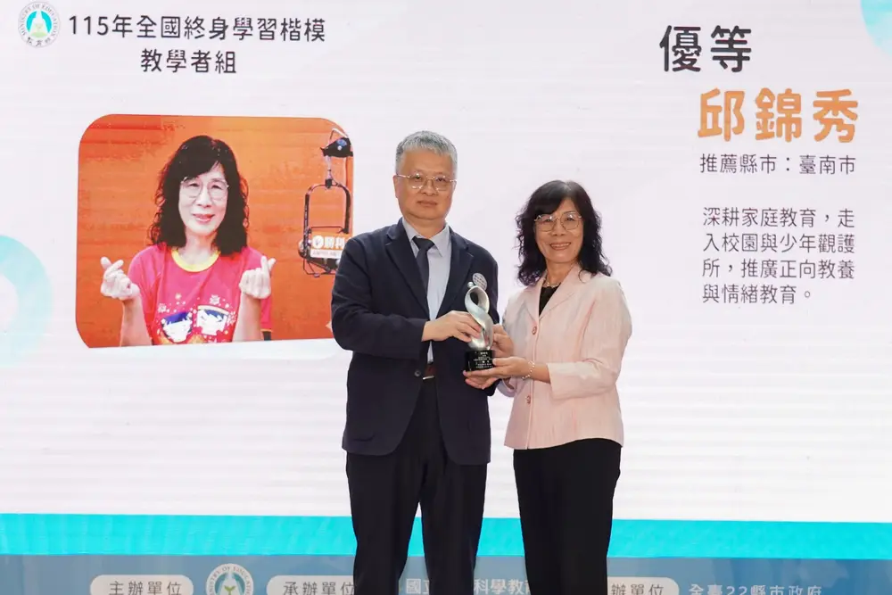
象徵終身學習至高榮譽的獎座，由教育部政務次長劉國偉親自頒發。
2026 年 10 月 17 日 · 第四屆終身學習節公開頒獎表揚儀式 · 國立臺灣科學教育館（照片：臺南市家庭教育中心）
從學校志工起步，踏上志願服務之路；到 2019 年，志工生涯已滿 22 年。
獲全國推展家庭教育績優人員金鐸獎，肯定她在家庭教育第一線的耕耘。
同時獲得衛福部全國績優志工金牌獎與台南市績優志工金質獎；當年服務逾 500 小時、研習 400 小時，累積時數為台南金質獎得主中最多。
以警四分局志工中隊長身分，在晶英酒店舉辦年終表揚志工與感恩餐會，獲市長黃偉哲頒發貢獻獎。
於福爾摩沙遊艇酒店舉辦年終表揚與感恩餐會，邀請碳佐麻里總裁邱蔡亮、董事長邱彥騰等貴賓蒞臨；九十多歲的邱蔡亮總裁還在席間高歌一曲。
擔任三三讀書會活動總控，在安平亞果會所舉辦 CPR 與 AED 急救課程。
獲教育部 114 年度推展家庭教育績優志工個人獎，全國僅 20 席，台南囊括 4 席、為全國最多。
於家庭教育諮詢委員會中，將獎項獻給市府，由葉澤山副市長代表接受。
獲教育部 115 年度全國終身學習楷模「教學者組」優等，於國立臺灣科學教育館接受表揚。
「如一盞溫暖的燈，以正向教養與有溫度的創意手作，陪伴無數家庭找回幸福力量。」
—— 臺南市家庭教育中心，2026 年 10 月 28 日貼文除了家庭教育，邱錦秀也擔任台南市政府警察局第四分局志工中隊長。每年歲末，她主辦年終表揚績優志工與感恩餐會，感謝志工們一年的付出，並自掏腰包準備紀念品與摸彩獎品——55 吋電視、腳踏車，都曾出現在摸彩台上。
「美麗的中隊長邱錦秀，把志工中隊帶得紅紅火火，服務社會、向心力驚人！」
—— 陳苡銜，2025 年 12 月感恩餐會貼文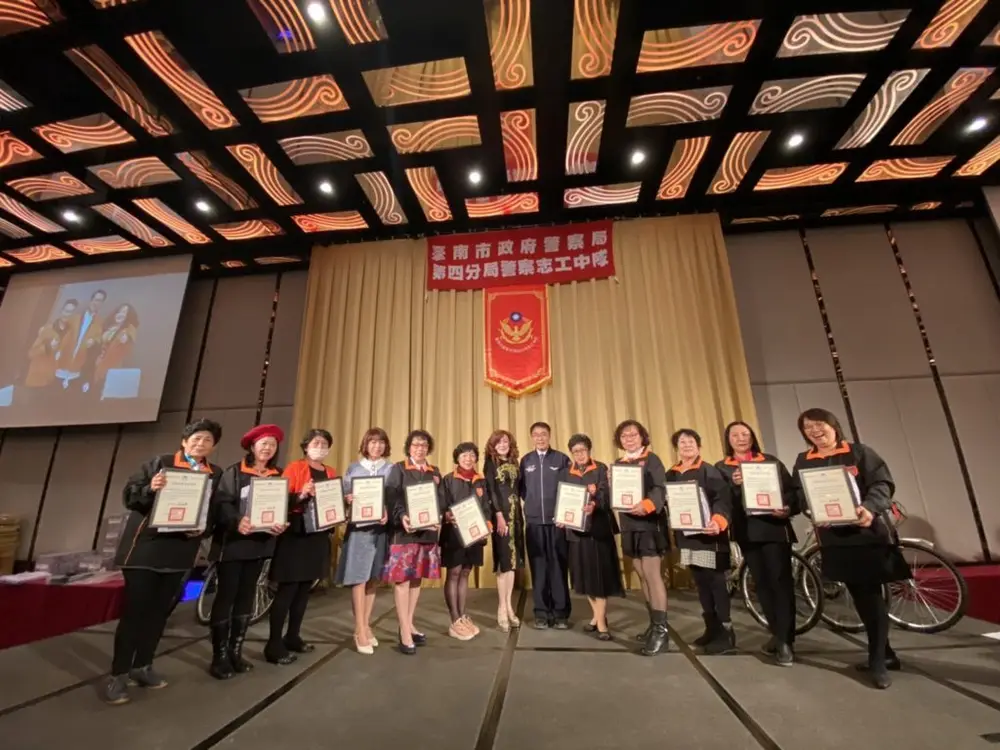
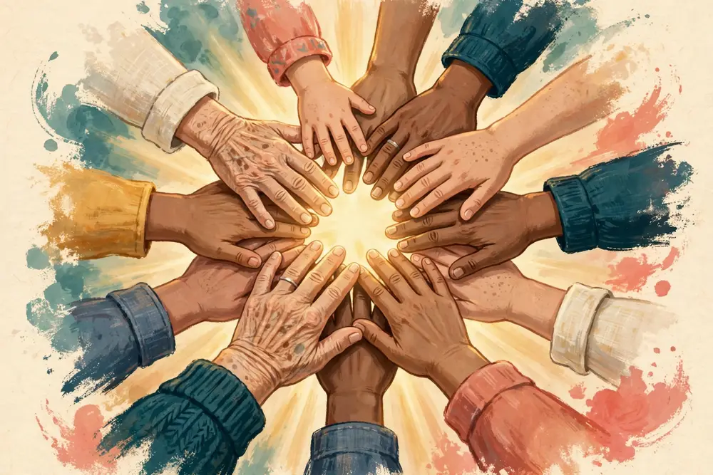
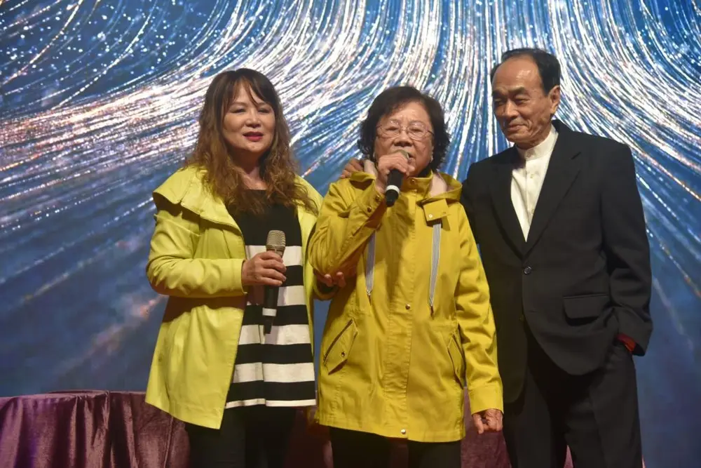
邱錦秀與台南起家的碳佐麻里集團，在公益與地方社團活動中結下好交情。2022 年的感恩餐會，她邀請集團總裁邱蔡亮、董事長邱彥騰蒞臨；九十多歲的邱蔡亮總裁興致一來，在席間高歌一曲，成為當晚最溫暖的畫面。
她也參與碳佐麻里舉辦的「海好有你」淨灘等公益活動，與在地企業一起為海岸盡一份心力。
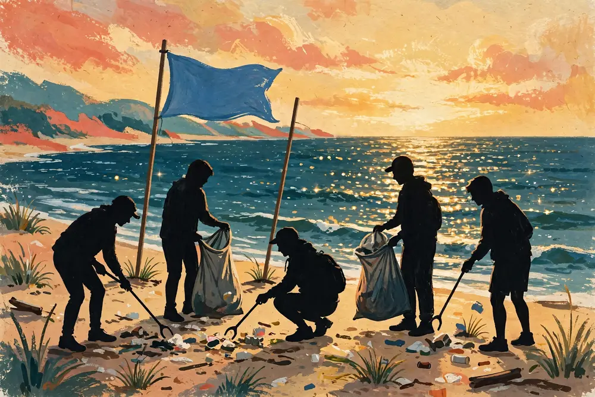
本頁內容皆有公開報導可查，點卡片可看原文。
累積服務 8,602.5 小時，全國金牌獎最年輕得主；「我只是一本初衷，做我喜歡的志工服務。」
自由時報 · 2026-09-03邱錦秀服務超過 29 年，連續 13 年擔任少年觀護所教誨講師，獲教學者組優等。
ETtoday · 2025-09-10全國僅 20 席績優志工個人獎，台南囊括 4 席；邱錦秀以志工督導身分獲獎。
中華日報 · 2022-12-28中隊長邱錦秀主辦年終感恩餐會，市長親頒貢獻獎；碳佐麻里總裁邱蔡亮高歌助興。
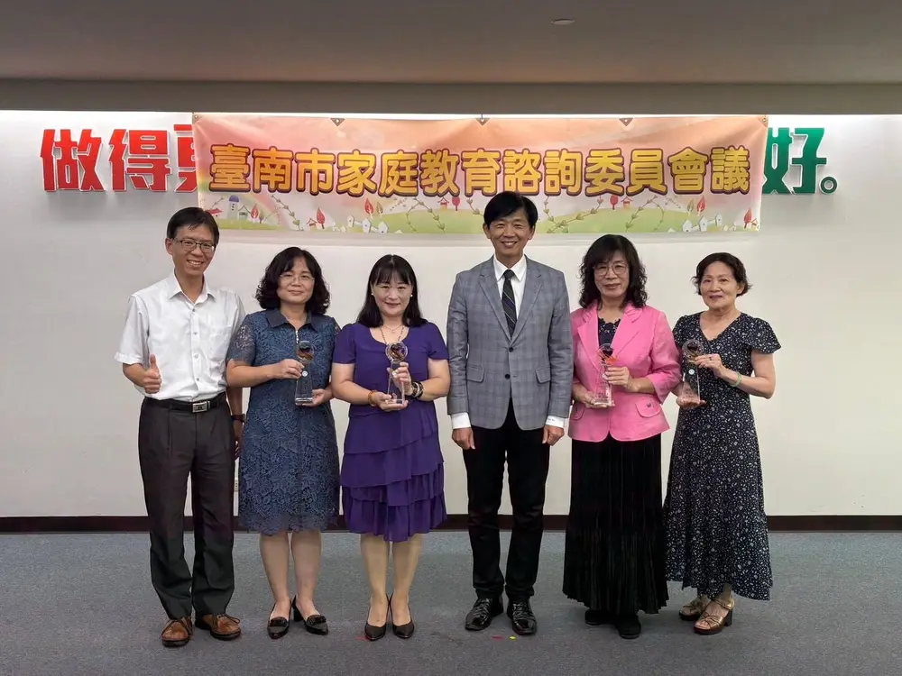
邱錦秀老師目前沒有公開的個人聯絡方式；如需邀請分享或合作，請洽臺南市家庭教育中心。